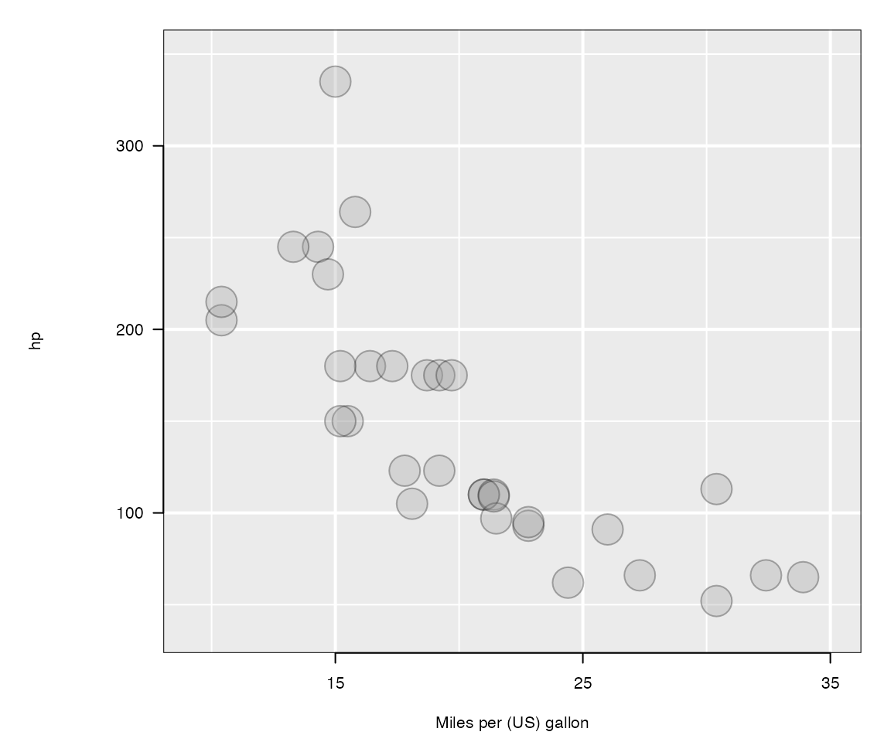

Publishing loon plots
R. Wayne Oldford and Zehao Xu
2021-09-10
Source:vignettes/publishingLoonPlots.Rmd
publishingLoonPlots.RmdThe loon package is designed for interactive data exploration. After exploring the events of interest, we need a tool to turn the interactive plots to static ones for publication. Snapshots of interactive loon plots can be captured in several ways:
- via a screen shot of the window using
<CTRL-P>(a primitive rendering of the plot saved as a file) - via a screen shot of the window from the host operating system (producing a file of several possible types), or
- using
plot()orloonGrob()to translate the plot to agridgraphic.
Of these, the last will be most convenient to incorporate plots in RMarkdown or to export them using some R environments (e.g., RStudio). This is the method discussed here.
By translating an interactive loon widget into a grid object, one can also later edit it to change or add fine details that otherwise might not be easily produced interactively.
See also the vignette “Saving loon plots”
Other packages within the diveR package suite are the loon.ggplot package and the loon.shiny package. These can be used to create elegant ggplot2 plots from loon plots (and incorporate into into RMArkdown documents) and to incorporate interactive loon plots for a curated exploratory analysis within in a shiny app.
Producing static grid plots
The grid graphics package is one of the fundamental graphics systems in R. It provides a low-level, general purpose graphics system for producing a wide variety of plots. Many well-known graphical systems, e.g. lattice and ggplot2, use grid to draw plots.
Here loon plots are transformed into grid graphics plots to provide, as close to possible, a wysiwyg snapshot of the interactive plot. Being grid graphics plots, these in turn can be edited using various grid functions.
Begin with a classic data set in R – mtcars which contains 32 automobiles and 11 (numeric) variables.
Here, p is a loon widget. The aesthetics attributes can be accessed either by function l_cget() or a simple [, as in
# x coordinates
p['x']## [1] 21.0 21.0 22.8 21.4 18.7 18.1 14.3 24.4 22.8 19.2 17.8 16.4 17.3 15.2 10.4
## [16] 10.4 14.7 32.4 30.4 33.9 21.5 15.5 15.2 13.3 19.2 27.3 26.0 30.4 15.8 19.7
## [31] 15.0 21.4
# point size
p['size']## [1] 8 8 8 8 8 8 8 8 8 8 8 8 8 8 8 8 8 8 8 8 8 8 8 8 8 8 8 8 8 8 8 8These returned values always reflect the current states of p. For example, suppose the size of points is modified to 6 by direct manipulations on the plot, call p['size'], a length 32 vector of 6 is returned. With this handy “querying tool”, all essential elements of a loon widget can be accessed to construct a selfsame grid graphics, as in
# `p` is a loon widget
plot(p) which produced and printed the plot
which produced and printed the plot p (as it presently appears) by first translating the loon plot into a grid graphics object (or grob). This can be used at any time, including in an RMarkdown document (as it is here).
For most users, no more need be done. This vignette could end here.
These users might also be interested in turning loon plots into ggplots (and vice versa); if so, some information on this is provided towards the end of this vignette in the ggplots section.
For those interested in a deeper understanding of the grid plots, read on.
The plot() function is simply a wrapper function around the workhorse function loonGrob() which does the translatation from current display of the loon plot to a grid object (or grob) capturing the features of the loon display. The resulting grob is drawn using grid.draw() from the grid package.
As with any grob, these can be manipulated as grid data structures – perhaps arranging several of them into a compound display using grid.arrange() (from the gridExtra package), or adding them to an existing grob created some other way, or simply editing them to change their look using grid functions.
loonGrob(): loon –> grid object
The grid graphic plot is saved by assigning it to a variable when it is created. Either drawing it at the same time (as a side-effect)
g0 <- plot(p)or postponing the drawing to later as in
g0 <- plot(p, draw = FALSE)Either way, a grid data structure is created and assigned to the variable g0.
Alternatively, loonGrob() can be called directly, as in
g0 <- loonGrob(p)The data structure returned is of
class(g0)## [1] "gTree" "grob" "gDesc"This gTree object is a tree data structure in grid and contains the many grobs needed to draw the plot on demand. Numerous functions exist within the grid package for validating, drawing, and modifying grid graphical objects like this gTree and many of its elements.
For example, the function grid.draw() will draw the plot called.
library(grid)
grid.newpage()
grid.draw(g0)
The tree structure of g0 is easily seen using grid.ls() to list the contents:
grid.ls(g0)## GRID.gTree.2
## l_plot
## bounding box
## loon plot
## guides
## guides background
## guidelines: xaxis (major), x = 15
## guidelines: xaxis (major), x = 25
## guidelines: xaxis (major), x = 35
## guidelines: xaxis (minor), x = 10
## guidelines: xaxis (minor), x = 20
## guidelines: xaxis (minor), x = 30
## guidelines: yaxis (major), y = 100
## guidelines: yaxis (major), y = 200
## guidelines: yaxis (major), y = 300
## guidelines: yaxis (minor), y = 50
## guidelines: yaxis (minor), y = 150
## guidelines: yaxis (minor), y = 250
## guidelines: yaxis (minor), y = 350
## labels
## x label
## y label
## title: textGrob arguments
## axes
## x axis
## major
## ticks
## labels
## y axis
## major
## ticks
## labels
## clipping region
## l_plot_layers
## scatterplot
## points: primitive glyphs
## boundary rectangleThe levels are indicated by indenting.
The following figure renders the tree structure more generally:  Node labels give the
Node labels give the loonGrob names with the tree hierarchy following solid lines from left to right. Grey values indicate the same for other types of loon plots (separate with braces) and identify potential options peculiar to each loon plot.
For example, the root node “l_plot” contains a “bounding box” and a “loon plot”, each loon plot has “guides”, “labels”, “axes”, “clipping region”, “boundary rectangle” and “l_xxxx_layers” (according to the type of loon plot), and the loon plot p has “l_plot_layers” consisting of a “scatterplot” and possibly other layers like lines and so on.
changing a grid object: get, edit, set
Knowing the labels, one can retrieve, edit, or even replace any fine details of the static plot. For example, consider the “xlabel” and “ylabel” of the gTree. Each label (as it appears above in the list of the gTree) provides a path to the corresponding grob.
Changes to an existing grid plot are made in three steps:
-
getGrob()to get a copy of thegrobto be changed -
editGrob()to produce agrobwith the desired changes, and -
setGrob()to set the newly producedgrobinto the appropriate place in the plot.
Each of these are now illustrated in turn.
getGrob()
Knowing the path is “x label” in the gTree g0, the grob is extracted using getGrob(). For example,
# retrieve xlabel grob
xlabelGrob <- getGrob(g0, "x label")
xlabelGrob## text[x label]
class(xlabelGrob)## [1] "text" "grob" "gDesc"which itself has structure:
names(xlabelGrob)## [1] "label" "x" "y" "just"
## [5] "hjust" "vjust" "rot" "check.overlap"
## [9] "name" "gp" "vp"
xlabelGrob$label## [1] "mpg"Note that xlabelGrob is a copy of the grob found at the “x label” path in g0.
Similarly grobs at other paths (e.g., “y label”) could be extracted and copied.
Note also that some elements of the gTree appearing in the listing grid.ls(g0) are actually parts of a grob and not the path itself. For example, consider the x-axis elements:
## [1] "at" "label" "main" "edits"
## [5] "name" "gp" "vp" "children"
## [9] "childrenOrder"
names(xAxisGrob$children)## [1] "major" "ticks" "labels"
editGrob()
Having xlabelGrob in hand, we can use it to create another copy of it with changed features using editGrob().
For example, a more meaningful x axis “label” name can be assigned:
newGrob = editGrob(xlabelGrob,
label = "Miles/(US) gallon")The newGrob is now a textGrob
class(newGrob)## [1] "text" "grob" "gDesc"with the more informative label:
newGrob$label## [1] "Miles/(US) gallon"
setGrob()
To complete the change to g0, the old “x label” needs to be replaced by newGrob:
g0 <- setGrob(gTree = g0,
gPath = "x label",
newGrob = newGrob)Now “xlabel” has been changed to “Miles/(US) gallon” within the grid plot g0.
grid.newpage()
grid.draw(g0)In the same way, other features of the “x label” could have been changed as well as the grobs at other paths of the gTree returned by loonGrob().
e.g.: changing features of the points
A more common place reason to edit would be to change something on the grid plot to add features not available in loon.
For example, transparency is (presently) missing from tcltk colours (on which loon is based) – the tcltk system presently uses 12 digit hexadecimal colour to represent three channels (one for each of the RGB colours) and no fourth channel indicating alpha transparency. In contrast, transparency is accommodated in grid graphics so that one might choose to set the alpha values after the transformation.
The points in the plot can be made transparent using setGrob(), editGrob(), and getGrob(), given the path to the points grob, namely “points: primitive glyphs”.
pathGrob <- "points: primitive glyphs"
newLoonPointsGrob <-
editGrob(
getGrob(g0, pathGrob),
gp = gpar(fill = as_hex6color(p['color']),
col = l_getOption("foreground"),
fontsize = 20, # give a larger point size,
alpha = 0.3 # turn color transparent
)
)
# update loon points grob
g0 <- setGrob(
gTree = g0,
gPath = "points: primitive glyphs",
newGrob = newLoonPointsGrob
)
grid.newpage()
grid.draw(g0)
After modification, the points are now transparent and the size has been made larger.
what if…
In using loon, the captured loon plot had certain features missing that one would now like to see in the static plot?
For example, what if …
labels were invisible?
Suppose the labels (i.e., “xlabel” and “ylabel”) of p had been turned off at the time that loonGrob() was called. That is,
p['showLabels'] <- FALSE
g1 <- loonGrob(p)
grid.newpage()
grid.draw(g1)
The gTree g1 now has a different path at x label.
grid.ls(g1)## GRID.gTree.3
## l_plot
## bounding box
## loon plot
## guides
## guides background
## guidelines: xaxis (major), x = 15
## guidelines: xaxis (major), x = 25
## guidelines: xaxis (major), x = 35
## guidelines: xaxis (minor), x = 10
## guidelines: xaxis (minor), x = 20
## guidelines: xaxis (minor), x = 30
## guidelines: yaxis (major), y = 100
## guidelines: yaxis (major), y = 200
## guidelines: yaxis (major), y = 300
## guidelines: yaxis (minor), y = 50
## guidelines: yaxis (minor), y = 150
## guidelines: yaxis (minor), y = 250
## guidelines: yaxis (minor), y = 350
## labels
## x label: textGrob arguments
## y label: textGrob arguments
## title: textGrob arguments
## axes
## x axis
## major
## ticks
## labels
## y axis
## major
## ticks
## labels
## clipping region
## l_plot_layers
## scatterplot
## points: primitive glyphs
## boundary rectangleTrying to retrieve the “x label” as before no longer works. As the grid listing shows, the correct path is now “x label: textGrob arguments”. This is an indication that the label is not visible in the loon plot and that, yet, information on the loon label is still present in the gTree. The arguments necessary to construct the loon plot on the (at least in terms of the ) was present (though not visible) in the loon plot.
xlabelGrob <- getGrob(g1, "x label: textGrob arguments")
xlabelGrob## grob[x label: textGrob arguments]From the class of xlabelGrob
class(xlabelGrob)## [1] "grob" "gDesc"one gets a hint that while this grob is incomplete (no text class), it remains a description (gDesc) containing the arguments needed to complete it.
This description can be turned into an actual textGrob using some helper functions written in loon. First instantiate the textGrob for the x label and assign it to g2
g2 <- l_instantiateGrob(g1, "x label: textGrob arguments")Then reset the plot margins to make room for the labels (and title):
g2 <- l_setGrobPlotView(g2)And plot the result:
grid.newpage()
grid.draw(g2)Extra arguments to l_instantiateGrob() are passed on to the grobFun (in this case textGrob()). For example, we could choose to place the x label in a different location:
# reset the x label's position and font size
g3 <- l_instantiateGrob(g1, "x label: textGrob arguments",
x = unit(35, "native"),
y = unit(-1.5, "lines"),
gp = gpar(fontsize = 15,
fontface = "italic",
col = "blue"))
g3 <- l_setGrobPlotView(g3)
grid.newpage()
grid.draw(g3)Now getGrob() seems to have returned NULL instead of a copy of a textGrob. The problem is that the path is not “x label” but “x label: textGrob arguments”.
xlabelGrob <- getGrob(g1, "x label: textGrob arguments")
xlabelGrob## grob[x label: textGrob arguments]
class(xlabelGrob)## [1] "grob" "gDesc"
names(xlabelGrob)## [1] "label" "y" "name" "gp" "vp"Even though they do not appear, they may still be set because a placeholder grob has been created for them. This is indicated by the textGrob arguments phrase appearing next to each label when the structure is listed.
Hidden elements of the loon plot are stored into grob placeholders (with arguments that cause no display). In general, these will appear with the grob name xxxx appended by arguments – in the present case as “: textGrob arguments”.
These placeholder grobs can be extracted:
xlabelGrob <- getGrob(g1, "x label: textGrob arguments")
xlabelGrob## grob[x label: textGrob arguments]
ylabelGrob <- getGrob(g1, "y label: textGrob arguments")
ylabelGrob## grob[y label: textGrob arguments]Note that the default labels automatically constructed in loon are still there,
xlabelGrob$label## [1] "mpg"
ylabelGrob$label## [1] "hp"they are just not visible in the plot.
newXLabelGrob <- editGrob(
xlabelGrob,
gp = gpar(
col = l_getOption("foreground"),
alpha = 1.0, # turn color transparent
fontsize = 20 # give a larger point size
)
)
# update loon points grob
g1 <- setGrob(
gTree = g1,
gPath = "x label: textGrob arguments",
newGrob = newXLabelGrob
)
grid.newpage()
grid.draw(g1)
Points are invisible?
Unfortunately, if points are invisible, their coordinates and aesthetics attributes would be missing in the loonGrob. Technically speaking, it is possible to include these invisible points inside the loonGrob, however, what stops us doing so is that the data structure would have to be changed – a pointsGrob would have to be replaced by a gTree with several children pointsGrobs to preserve display order and distinguish visible from invisible point.
This solution seems overly complicated and so was not implemented. Better to simply make the changes interactively on the loon plot and then translate it again to a new grid data structure.
Points are not primitive glyphs?
loon provides non-primitive glyphs, e.g. text glyph, image glyph, polygon glyph and etc. Once a non-primitive glyph is drawn, the grob label beneath scatterplot would be points: mixed glyph.
```r
# add text glyph
carNames <- l_glyph_add_text(p, text = rownames(mtcars))
p['glyph'] <- carNames
# loonGrob
g2 <- loonGrob(p)
getGrob(g2, "points: mixed glyphs")
```
```
## gTree[points: mixed glyphs]
```It returns a gTree object and each child is a textGrob.
grid.newpage()
grid.draw(g2)Plots using other packages
ggplots
Elegant print graphics are also provided through the popular ggplot2 package built on top of grid graphics. Users familiar with ggplot2 and its grammar of graphics might be interested in the loon companion package loon.ggplot which extends the grammar to a grammar of interactive graphics.
There any loon plot can be captured as a ggplot by simply calling loon.ggplot() on it. The same function will also create an interactive loon plot if called on an existing ggplot.
Details can be found here.
This is probably the simplest solution to have a static plot which can subsequently edited programmatically (via the grammar of ggplot2). Any changes to the ggplot could also then ve turned into an interactive loon plot.
shiny applications
In the interest of supporting reproducible research, analysts will sometimes want to share interactive (and linked) plots in their curated analysis. A shiny app is the way to shared this interaction.
The loon companion package loon.shiny makes it possible to do just that by incorporating interactive loon style plots into a shiny app. Then the viewer may interactively explore the data under analysis inside an hyml browser. The interaction will not be as open ended as using loon in R but will be peculiar to the data in the app and to the features selected y the author.
The loon.shiny transformation relies on the loon to grid functionality described above. Details can be found here.